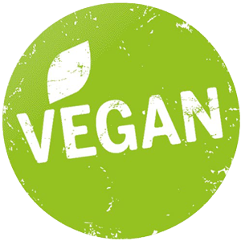
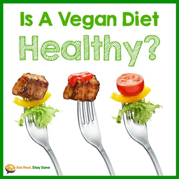

Veganism
go Vegan
Healthy Eating
Veganism is a way of living which seeks to exclude, as far as is possible and practicable, all forms of exploitation of, and cruelty to, animals for food, clothing or any other purpose. There are many ways to embrace vegan living. Yet one thing all vegans have in common is a plant-based diet avoiding all animal foods such as meat (including fish, shellfish and insects), dairy, eggs and honey - as well as products like leather and any tested on animals.
lifestyle
keeping active
So you’ve decided that you’d like to become vegan, but where do you start? Transitioning to a vegan lifestyle can seem really daunting but often the idea of a big lifestyle change is a lot scarier than actually doing it. If you focus on making one change at a time the progression to veganism will feel quite natural. It’s important to go at your own pace and to decide on a method that works best for you. Here are some ideas and guidelines to structure your transition to veganism, just be sure to tailor them to your specific needs.
get involved
make the change
A vegan diet is one that consists of only plant-derived foods. Vegans don’t use or consume any animals or animal products including flesh (land or sea animals), milk, eggs, or honey.
Eating vegan is affordable. The most nutritious and inexpensive vegan foods which can be found in any supermarket, are fresh produce, grains, legumes and nuts and seeds. These should make up the bulk of the diet for optimum health. There are more and more options of vegan processed foods such as soy hot dogs, vegan “cheeses,” desserts, which make transitioning to a vegan diet easy and fun!